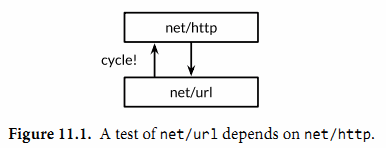

11.2. 测试函数
每个测试函数必须导入testing包。测试函数有如下的签名：
func TestName(t *testing.T) {
// ...
}
测试函数的名字必须以Test开头，可选的后缀名必须以大写字母开头：
func TestSin(t *testing.T) { /* ... */ }
func TestCos(t *testing.T) { /* ... */ }
func TestLog(t *testing.T) { /* ... */ }
其中t参数用于报告测试失败和附加的日志信息。让我们定义一个实例包gopl.io/ch11/word1，其中只有一个函数IsPalindrome用于检查一个字符串是否从前向后和从后向前读都是一样的。（下面这个实现对于一个字符串是否是回文字符串前后重复测试了两次；我们稍后会再讨论这个问题。）
gopl.io/ch11/word1
// Package word provides utilities for word games.
package word
// IsPalindrome reports whether s reads the same forward and backward.
// (Our first attempt.)
func IsPalindrome(s string) bool {
for i := range s {
if s[i] != s[len(s)-1-i] {
return false
}
}
return true
}
在相同的目录下，word_test.go测试文件中包含了TestPalindrome和TestNonPalindrome两个测试函数。每一个都是测试IsPalindrome是否给出正确的结果，并使用t.Error报告失败信息：
package word
import "testing"
func TestPalindrome(t *testing.T) {
if !IsPalindrome("detartrated") {
t.Error(`IsPalindrome("detartrated") = false`)
}
if !IsPalindrome("kayak") {
t.Error(`IsPalindrome("kayak") = false`)
}
}
func TestNonPalindrome(t *testing.T) {
if IsPalindrome("palindrome") {
t.Error(`IsPalindrome("palindrome") = true`)
}
}
go test命令如果没有参数指定包那么将默认采用当前目录对应的包（和go build命令一样）。我们可以用下面的命令构建和运行测试。
$ cd $GOPATH/src/gopl.io/ch11/word1
$ go test
ok gopl.io/ch11/word1 0.008s
结果还比较满意，我们运行了这个程序， 不过没有提前退出是因为还没有遇到BUG报告。不过一个法国名为“Noelle Eve Elleon”的用户会抱怨IsPalindrome函数不能识别“été”。另外一个来自美国中部用户的抱怨则是不能识别“A man, a plan, a canal: Panama.”。执行特殊和小的BUG报告为我们提供了新的更自然的测试用例。
func TestFrenchPalindrome(t *testing.T) {
if !IsPalindrome("été") {
t.Error(`IsPalindrome("été") = false`)
}
}
func TestCanalPalindrome(t *testing.T) {
input := "A man, a plan, a canal: Panama"
if !IsPalindrome(input) {
t.Errorf(`IsPalindrome(%q) = false`, input)
}
}
为了避免两次输入较长的字符串，我们使用了提供了有类似Printf格式化功能的 Errorf函数来汇报错误结果。
当添加了这两个测试用例之后，go test返回了测试失败的信息。
$ go test
--- FAIL: TestFrenchPalindrome (0.00s)
word_test.go:28: IsPalindrome("été") = false
--- FAIL: TestCanalPalindrome (0.00s)
word_test.go:35: IsPalindrome("A man, a plan, a canal: Panama") = false
FAIL
FAIL gopl.io/ch11/word1 0.014s
先编写测试用例并观察到测试用例触发了和用户报告的错误相同的描述是一个好的测试习惯。只有这样，我们才能定位我们要真正解决的问题。
先写测试用例的另外的好处是，运行测试通常会比手工描述报告的处理更快，这让我们可以进行快速地迭代。如果测试集有很多运行缓慢的测试，我们可以通过只选择运行某些特定的测试来加快测试速度。
参数-v可用于打印每个测试函数的名字和运行时间：
$ go test -v
=== RUN TestPalindrome
--- PASS: TestPalindrome (0.00s)
=== RUN TestNonPalindrome
--- PASS: TestNonPalindrome (0.00s)
=== RUN TestFrenchPalindrome
--- FAIL: TestFrenchPalindrome (0.00s)
word_test.go:28: IsPalindrome("été") = false
=== RUN TestCanalPalindrome
--- FAIL: TestCanalPalindrome (0.00s)
word_test.go:35: IsPalindrome("A man, a plan, a canal: Panama") = false
FAIL
exit status 1
FAIL gopl.io/ch11/word1 0.017s
参数-run对应一个正则表达式，只有测试函数名被它正确匹配的测试函数才会被go test测试命令运行：
$ go test -v -run="French|Canal"
=== RUN TestFrenchPalindrome
--- FAIL: TestFrenchPalindrome (0.00s)
word_test.go:28: IsPalindrome("été") = false
=== RUN TestCanalPalindrome
--- FAIL: TestCanalPalindrome (0.00s)
word_test.go:35: IsPalindrome("A man, a plan, a canal: Panama") = false
FAIL
exit status 1
FAIL gopl.io/ch11/word1 0.014s
当然，一旦我们已经修复了失败的测试用例，在我们提交代码更新之前，我们应该以不带参数的go test命令运行全部的测试用例，以确保修复失败测试的同时没有引入新的问题。
我们现在的任务就是修复这些错误。简要分析后发现第一个BUG的原因是我们采用了 byte而不是rune序列，所以像“été”中的é等非ASCII字符不能正确处理。第二个BUG是因为没有忽略空格和字母的大小写导致的。
针对上述两个BUG，我们仔细重写了函数：
gopl.io/ch11/word2
// Package word provides utilities for word games.
package word
import "unicode"
// IsPalindrome reports whether s reads the same forward and backward.
// Letter case is ignored, as are non-letters.
func IsPalindrome(s string) bool {
var letters []rune
for _, r := range s {
if unicode.IsLetter(r) {
letters = append(letters, unicode.ToLower(r))
}
}
for i := range letters {
if letters[i] != letters[len(letters)-1-i] {
return false
}
}
return true
}
同时我们也将之前的所有测试数据合并到了一个测试中的表格中。
func TestIsPalindrome(t *testing.T) {
var tests = []struct {
input string
want bool
}{
{"", true},
{"a", true},
{"aa", true},
{"ab", false},
{"kayak", true},
{"detartrated", true},
{"A man, a plan, a canal: Panama", true},
{"Evil I did dwell; lewd did I live.", true},
{"Able was I ere I saw Elba", true},
{"été", true},
{"Et se resservir, ivresse reste.", true},
{"palindrome", false}, // non-palindrome
{"desserts", false}, // semi-palindrome
}
for _, test := range tests {
if got := IsPalindrome(test.input); got != test.want {
t.Errorf("IsPalindrome(%q) = %v", test.input, got)
}
}
}
现在我们的新测试都通过了：
$ go test gopl.io/ch11/word2
ok gopl.io/ch11/word2 0.015s
这种表格驱动的测试在Go语言中很常见。我们可以很容易地向表格添加新的测试数据，并且后面的测试逻辑也没有冗余，这样我们可以有更多的精力去完善错误信息。
失败测试的输出并不包括调用t.Errorf时刻的堆栈调用信息。和其他编程语言或测试框架的assert断言不同，t.Errorf调用也没有引起panic异常或停止测试的执行。即使表格中前面的数据导致了测试的失败，表格后面的测试数据依然会运行测试，因此在一个测试中我们可能了解多个失败的信息。
如果我们真的需要停止测试，或许是因为初始化失败或可能是早先的错误导致了后续错误等原因，我们可以使用t.Fatal或t.Fatalf停止当前测试函数。它们必须在和测试函数同一个goroutine内调用。
测试失败的信息一般的形式是“f(x) = y, want z”，其中f(x)解释了失败的操作和对应的输入，y是实际的运行结果，z是期望的正确的结果。就像前面检查回文字符串的例子，实际的函数用于f(x)部分。显示x是表格驱动型测试中比较重要的部分，因为同一个断言可能对应不同的表格项执行多次。要避免无用和冗余的信息。在测试类似IsPalindrome返回布尔类型的函数时，可以忽略并没有额外信息的z部分。如果x、y或z是y的长度，输出一个相关部分的简明总结即可。测试的作者应该要努力帮助程序员诊断测试失败的原因。
练习 11.1: 为4.3节中的charcount程序编写测试。
练习 11.2: 为（§6.5）的IntSet编写一组测试，用于检查每个操作后的行为和基于内置map的集合等价，后面练习11.7将会用到。
11.2.1. 随机测试
表格驱动的测试便于构造基于精心挑选的测试数据的测试用例。另一种测试思路是随机测试，也就是通过构造更广泛的随机输入来测试探索函数的行为。
那么对于一个随机的输入，我们如何能知道希望的输出结果呢？这里有两种处理策略。第一个是编写另一个对照函数，使用简单和清晰的算法，虽然效率较低但是行为和要测试的函数是一致的，然后针对相同的随机输入检查两者的输出结果。第二种是生成的随机输入的数据遵循特定的模式，这样我们就可以知道期望的输出的模式。
下面的例子使用的是第二种方法：randomPalindrome函数用于随机生成回文字符串。
import "math/rand"
// randomPalindrome returns a palindrome whose length and contents
// are derived from the pseudo-random number generator rng.
func randomPalindrome(rng *rand.Rand) string {
n := rng.Intn(25) // random length up to 24
runes := make([]rune, n)
for i := 0; i < (n+1)/2; i++ {
r := rune(rng.Intn(0x1000)) // random rune up to '\u0999'
runes[i] = r
runes[n-1-i] = r
}
return string(runes)
}
func TestRandomPalindromes(t *testing.T) {
// Initialize a pseudo-random number generator.
seed := time.Now().UTC().UnixNano()
t.Logf("Random seed: %d", seed)
rng := rand.New(rand.NewSource(seed))
for i := 0; i < 1000; i++ {
p := randomPalindrome(rng)
if !IsPalindrome(p) {
t.Errorf("IsPalindrome(%q) = false", p)
}
}
}
虽然随机测试会有不确定因素，但是它也是至关重要的，我们可以从失败测试的日志获取足够的信息。在我们的例子中，输入IsPalindrome的p参数将告诉我们真实的数据，但是对于函数将接受更复杂的输入，不需要保存所有的输入，只要日志中简单地记录随机数种子即可（像上面的方式）。有了这些随机数初始化种子，我们可以很容易修改测试代码以重现失败的随机测试。
通过使用当前时间作为随机种子，在整个过程中的每次运行测试命令时都将探索新的随机数据。如果你使用的是定期运行的自动化测试集成系统，随机测试将特别有价值。
练习 11.3: TestRandomPalindromes测试函数只测试了回文字符串。编写新的随机测试生成器，用于测试随机生成的非回文字符串。
练习 11.4: 修改randomPalindrome函数，以探索IsPalindrome是否对标点和空格做了正确处理。
译者注：拓展阅读感兴趣的读者可以再了解一下go-fuzz
11.2.2. 测试一个命令
对于测试包go test是一个有用的工具，但是稍加努力我们也可以用它来测试可执行程序。如果一个包的名字是 main，那么在构建时会生成一个可执行程序，不过main包可以作为一个包被测试器代码导入。
让我们为2.3.2节的echo程序编写一个测试。我们先将程序拆分为两个函数：echo函数完成真正的工作，main函数用于处理命令行输入参数和echo可能返回的错误。
gopl.io/ch11/echo
// Echo prints its command-line arguments.
package main
import (
"flag"
"fmt"
"io"
"os"
"strings"
)
var (
n = flag.Bool("n", false, "omit trailing newline")
s = flag.String("s", " ", "separator")
)
var out io.Writer = os.Stdout // modified during testing
func main() {
flag.Parse()
if err := echo(!*n, *s, flag.Args()); err != nil {
fmt.Fprintf(os.Stderr, "echo: %v\n", err)
os.Exit(1)
}
}
func echo(newline bool, sep string, args []string) error {
fmt.Fprint(out, strings.Join(args, sep))
if newline {
fmt.Fprintln(out)
}
return nil
}
在测试中我们可以用各种参数和标志调用echo函数，然后检测它的输出是否正确，我们通过增加参数来减少echo函数对全局变量的依赖。我们还增加了一个全局名为out的变量来替代直接使用os.Stdout，这样测试代码可以根据需要将out修改为不同的对象以便于检查。下面就是echo_test.go文件中的测试代码：
package main
import (
"bytes"
"fmt"
"testing"
)
func TestEcho(t *testing.T) {
var tests = []struct {
newline bool
sep string
args []string
want string
}{
{true, "", []string{}, "\n"},
{false, "", []string{}, ""},
{true, "\t", []string{"one", "two", "three"}, "one\ttwo\tthree\n"},
{true, ",", []string{"a", "b", "c"}, "a,b,c\n"},
{false, ":", []string{"1", "2", "3"}, "1:2:3"},
}
for _, test := range tests {
descr := fmt.Sprintf("echo(%v, %q, %q)",
test.newline, test.sep, test.args)
out = new(bytes.Buffer) // captured output
if err := echo(test.newline, test.sep, test.args); err != nil {
t.Errorf("%s failed: %v", descr, err)
continue
}
got := out.(*bytes.Buffer).String()
if got != test.want {
t.Errorf("%s = %q, want %q", descr, got, test.want)
}
}
}
要注意的是测试代码和产品代码在同一个包。虽然是main包，也有对应的main入口函数，但是在测试的时候main包只是TestEcho测试函数导入的一个普通包，里面main函数并没有被导出，而是被忽略的。
通过将测试放到表格中，我们很容易添加新的测试用例。让我通过增加下面的测试用例来看看失败的情况是怎么样的：
{true, ",", []string{"a", "b", "c"}, "a b c\n"}, // NOTE: wrong expectation!
go test输出如下：
$ go test gopl.io/ch11/echo
--- FAIL: TestEcho (0.00s)
echo_test.go:31: echo(true, ",", ["a" "b" "c"]) = "a,b,c", want "a b c\n"
FAIL
FAIL gopl.io/ch11/echo 0.006s
错误信息描述了尝试的操作（使用Go类似语法），实际的结果和期望的结果。通过这样的错误信息，你可以在检视代码之前就很容易定位错误的原因。
要注意的是在测试代码中并没有调用log.Fatal或os.Exit，因为调用这类函数会导致程序提前退出；调用这些函数的特权应该放在main函数中。如果真的有意外的事情导致函数发生panic异常，测试驱动应该尝试用recover捕获异常，然后将当前测试当作失败处理。如果是可预期的错误，例如非法的用户输入、找不到文件或配置文件不当等应该通过返回一个非空的error的方式处理。幸运的是（上面的意外只是一个插曲），我们的echo示例是比较简单的也没有需要返回非空error的情况。
11.2.3. 白盒测试
一种测试分类的方法是基于测试者是否需要了解被测试对象的内部工作原理。黑盒测试只需要测试包公开的文档和API行为，内部实现对测试代码是透明的。相反，白盒测试有访问包内部函数和数据结构的权限，因此可以做到一些普通客户端无法实现的测试。例如，一个白盒测试可以在每个操作之后检测不变量的数据类型。（白盒测试只是一个传统的名称，其实称为clear box测试会更准确。）
黑盒和白盒这两种测试方法是互补的。黑盒测试一般更健壮，随着软件实现的完善测试代码很少需要更新。它们可以帮助测试者了解真实客户的需求，也可以帮助发现API设计的一些不足之处。相反，白盒测试则可以对内部一些棘手的实现提供更多的测试覆盖。
我们已经看到两种测试的例子。TestIsPalindrome测试仅仅使用导出的IsPalindrome函数，因此这是一个黑盒测试。TestEcho测试则调用了内部的echo函数，并且更新了内部的out包级变量，这两个都是未导出的，因此这是白盒测试。
当我们准备TestEcho测试的时候，我们修改了echo函数使用包级的out变量作为输出对象，因此测试代码可以用另一个实现代替标准输出，这样可以方便对比echo输出的数据。使用类似的技术，我们可以将产品代码的其他部分也替换为一个容易测试的伪对象。使用伪对象的好处是我们可以方便配置，容易预测，更可靠，也更容易观察。同时也可以避免一些不良的副作用，例如更新生产数据库或信用卡消费行为。
下面的代码演示了为用户提供网络存储的web服务中的配额检测逻辑。当用户使用了超过90%的存储配额之后将发送提醒邮件。（译注：一般在实现业务机器监控，包括磁盘、cpu、网络等的时候，需要类似的到达阈值=>触发报警的逻辑，所以是很实用的案例。）
gopl.io/ch11/storage1
package storage
import (
"fmt"
"log"
"net/smtp"
)
func bytesInUse(username string) int64 { return 0 /* ... */ }
// Email sender configuration.
// NOTE: never put passwords in source code!
const sender = "notifications@example.com"
const password = "correcthorsebatterystaple"
const hostname = "smtp.example.com"
const template = `Warning: you are using %d bytes of storage,
%d%% of your quota.`
func CheckQuota(username string) {
used := bytesInUse(username)
const quota = 1000000000 // 1GB
percent := 100 * used / quota
if percent < 90 {
return // OK
}
msg := fmt.Sprintf(template, used, percent)
auth := smtp.PlainAuth("", sender, password, hostname)
err := smtp.SendMail(hostname+":587", auth, sender,
[]string{username}, []byte(msg))
if err != nil {
log.Printf("smtp.SendMail(%s) failed: %s", username, err)
}
}
我们想测试这段代码，但是我们并不希望发送真实的邮件。因此我们将邮件处理逻辑放到一个私有的notifyUser函数中。
gopl.io/ch11/storage2
var notifyUser = func(username, msg string) {
auth := smtp.PlainAuth("", sender, password, hostname)
err := smtp.SendMail(hostname+":587", auth, sender,
[]string{username}, []byte(msg))
if err != nil {
log.Printf("smtp.SendEmail(%s) failed: %s", username, err)
}
}
func CheckQuota(username string) {
used := bytesInUse(username)
const quota = 1000000000 // 1GB
percent := 100 * used / quota
if percent < 90 {
return // OK
}
msg := fmt.Sprintf(template, used, percent)
notifyUser(username, msg)
}
现在我们可以在测试中用伪邮件发送函数替代真实的邮件发送函数。它只是简单记录要通知的用户和邮件的内容。
package storage
import (
"strings"
"testing"
)
func TestCheckQuotaNotifiesUser(t *testing.T) {
var notifiedUser, notifiedMsg string
notifyUser = func(user, msg string) {
notifiedUser, notifiedMsg = user, msg
}
// ...simulate a 980MB-used condition...
const user = "joe@example.org"
CheckQuota(user)
if notifiedUser == "" && notifiedMsg == "" {
t.Fatalf("notifyUser not called")
}
if notifiedUser != user {
t.Errorf("wrong user (%s) notified, want %s",
notifiedUser, user)
}
const wantSubstring = "98% of your quota"
if !strings.Contains(notifiedMsg, wantSubstring) {
t.Errorf("unexpected notification message <<%s>>, "+
"want substring %q", notifiedMsg, wantSubstring)
}
}
这里有一个问题：当测试函数返回后，CheckQuota将不能正常工作，因为notifyUsers依然使用的是测试函数的伪发送邮件函数（当更新全局对象的时候总会有这种风险）。 我们必须修改测试代码恢复notifyUsers原先的状态以便后续其他的测试没有影响，要确保所有的执行路径后都能恢复，包括测试失败或panic异常的情形。在这种情况下，我们建议使用defer语句来延后执行处理恢复的代码。
func TestCheckQuotaNotifiesUser(t *testing.T) {
// Save and restore original notifyUser.
saved := notifyUser
defer func() { notifyUser = saved }()
// Install the test's fake notifyUser.
var notifiedUser, notifiedMsg string
notifyUser = func(user, msg string) {
notifiedUser, notifiedMsg = user, msg
}
// ...rest of test...
}
这种处理模式可以用来暂时保存和恢复所有的全局变量，包括命令行标志参数、调试选项和优化参数；安装和移除导致生产代码产生一些调试信息的钩子函数；还有有些诱导生产代码进入某些重要状态的改变，比如超时、错误，甚至是一些刻意制造的并发行为等因素。
以这种方式使用全局变量是安全的，因为go test命令并不会同时并发地执行多个测试。
11.2.4. 外部测试包
考虑下这两个包：net/url包，提供了URL解析的功能；net/http包，提供了web服务和HTTP客户端的功能。如我们所料，上层的net/http包依赖下层的net/url包。然后，net/url包中的一个测试是演示不同URL和HTTP客户端的交互行为。也就是说，一个下层包的测试代码导入了上层的包。

这样的行为在net/url包的测试代码中会导致包的循环依赖，正如图11.1中向上箭头所示，同时正如我们在10.1节所讲的，Go语言规范是禁止包的循环依赖的。
不过我们可以通过外部测试包的方式解决循环依赖的问题，也就是在net/url包所在的目录声明一个独立的url_test测试包。其中包名的_test后缀告诉go test工具它应该建立一个额外的包来运行测试。我们将这个外部测试包的导入路径视作是net/url_test会更容易理解，但实际上它并不能被其他任何包导入。
因为外部测试包是一个独立的包，所以能够导入那些依赖待测代码本身的其他辅助包；包内的测试代码就无法做到这点。在设计层面，外部测试包是在所有它依赖的包的上层，正如图11.2所示。

通过避免循环的导入依赖，外部测试包可以更灵活地编写测试，特别是集成测试（需要测试多个组件之间的交互），可以像普通应用程序那样自由地导入其他包。
我们可以用go list命令查看包对应目录中哪些Go源文件是产品代码，哪些是包内测试，还有哪些是外部测试包。我们以fmt包作为一个例子：GoFiles表示产品代码对应的Go源文件列表；也就是go build命令要编译的部分。
{% raw %}
$ go list -f={{.GoFiles}} fmt
[doc.go format.go print.go scan.go]
{% endraw %}
TestGoFiles表示的是fmt包内部测试代码，以_test.go为后缀文件名，不过只在测试时被构建：
{% raw %}
$ go list -f={{.TestGoFiles}} fmt
[export_test.go]
{% endraw %}
包的测试代码通常都在这些文件中，不过fmt包并非如此；稍后我们再解释export_test.go文件的作用。
XTestGoFiles表示的是属于外部测试包的测试代码，也就是fmt_test包，因此它们必须先导入fmt包。同样，这些文件也只是在测试时被构建运行：
{% raw %}
$ go list -f={{.XTestGoFiles}} fmt
[fmt_test.go scan_test.go stringer_test.go]
{% endraw %}
有时候外部测试包也需要访问被测试包内部的代码，例如在一个为了避免循环导入而被独立到外部测试包的白盒测试。在这种情况下，我们可以通过一些技巧解决：我们在包内的一个_test.go文件中导出一个内部的实现给外部测试包。因为这些代码只有在测试时才需要，因此一般会放在export_test.go文件中。
例如，fmt包的fmt.Scanf函数需要unicode.IsSpace函数提供的功能。但是为了避免太多的依赖，fmt包并没有导入包含巨大表格数据的unicode包；相反fmt包有一个叫isSpace内部的简易实现。
为了确保fmt.isSpace和unicode.IsSpace函数的行为保持一致，fmt包谨慎地包含了一个测试。一个在外部测试包内的白盒测试，是无法直接访问到isSpace内部函数的，因此fmt通过一个后门导出了isSpace函数。export_test.go文件就是专门用于外部测试包的后门。
package fmt
var IsSpace = isSpace
这个测试文件并没有定义测试代码；它只是通过fmt.IsSpace简单导出了内部的isSpace函数，提供给外部测试包使用。这个技巧可以广泛用于位于外部测试包的白盒测试。
11.2.5. 编写有效的测试
许多Go语言新人会惊异于Go语言极简的测试框架。很多其它语言的测试框架都提供了识别测试函数的机制（通常使用反射或元数据），通过设置一些“setup”和“teardown”的钩子函数来执行测试用例运行的初始化和之后的清理操作，同时测试工具箱还提供了很多类似assert断言、值比较函数、格式化输出错误信息和停止一个失败的测试等辅助函数（通常使用异常机制）。虽然这些机制可以使得测试非常简洁，但是测试输出的日志却会像火星文一般难以理解。此外，虽然测试最终也会输出PASS或FAIL的报告，但是它们提供的信息格式却非常不利于代码维护者快速定位问题，因为失败信息的具体含义非常隐晦，比如“assert: 0 == 1”或成页的海量跟踪日志。
Go语言的测试风格则形成鲜明对比。它期望测试者自己完成大部分的工作，定义函数避免重复，就像普通编程那样。编写测试并不是一个机械的填空过程；一个测试也有自己的接口，尽管它的维护者也是测试仅有的一个用户。一个好的测试不应该引发其他无关的错误信息，它只要清晰简洁地描述问题的症状即可，有时候可能还需要一些上下文信息。在理想情况下，维护者可以在不看代码的情况下就能根据错误信息定位错误产生的原因。一个好的测试不应该在遇到一点小错误时就立刻退出测试，它应该尝试报告更多的相关的错误信息，因为我们可能从多个失败测试的模式中发现错误产生的规律。
下面的断言函数比较两个值，然后生成一个通用的错误信息，并停止程序。它很好用也确实有效，但是当测试失败的时候，打印的错误信息却几乎是没有价值的。它并没有为快速解决问题提供一个很好的入口。
import (
"fmt"
"strings"
"testing"
)
// A poor assertion function.
func assertEqual(x, y int) {
if x != y {
panic(fmt.Sprintf("%d != %d", x, y))
}
}
func TestSplit(t *testing.T) {
words := strings.Split("a🅱️c", ":")
assertEqual(len(words), 3)
// ...
}
从这个意义上说，断言函数犯了过早抽象的错误：仅仅测试两个整数是否相同，而没能根据上下文提供更有意义的错误信息。我们可以根据具体的错误打印一个更有价值的错误信息，就像下面例子那样。只有在测试中出现重复模式时才采用抽象。
func TestSplit(t *testing.T) {
s, sep := "a🅱️c", ":"
words := strings.Split(s, sep)
if got, want := len(words), 3; got != want {
t.Errorf("Split(%q, %q) returned %d words, want %d",
s, sep, got, want)
}
// ...
}
现在的测试不仅报告了调用的具体函数、它的输入和结果的意义；并且打印的真实返回的值和期望返回的值；并且即使断言失败依然会继续尝试运行更多的测试。一旦我们写了这样结构的测试，下一步自然不是用更多的if语句来扩展测试用例，我们可以用像IsPalindrome的表驱动测试那样来准备更多的s和sep测试用例。
前面的例子并不需要额外的辅助函数，如果有可以使测试代码更简单的方法我们也乐意接受。（我们将在13.3节看到一个类似reflect.DeepEqual辅助函数。）一个好的测试的关键是首先实现你期望的具体行为，然后才是考虑简化测试代码、避免重复。如果直接从抽象、通用的测试库着手，很难取得良好结果。
练习11.5: 用表格驱动的技术扩展TestSplit测试，并打印期望的输出结果。
11.2.6. 避免脆弱的测试
如果一个应用程序对于新出现的但有效的输入经常失败说明程序容易出bug（不够稳健）；同样，如果一个测试仅仅对程序做了微小变化就失败则称为脆弱。就像一个不够稳健的程序会挫败它的用户一样，一个脆弱的测试同样会激怒它的维护者。最脆弱的测试代码会在程序没有任何变化的时候产生不同的结果，时好时坏，处理它们会耗费大量的时间但是并不会得到任何好处。
当一个测试函数会产生一个复杂的输出如一个很长的字符串、一个精心设计的数据结构或一个文件时，人们很容易想预先写下一系列固定的用于对比的标杆数据。但是随着项目的发展，有些输出可能会发生变化，尽管很可能是一个改进的实现导致的。而且不仅仅是输出部分，函数复杂的输入部分可能也跟着变化了，因此测试使用的输入也就不再有效了。
避免脆弱测试代码的方法是只检测你真正关心的属性。保持测试代码的简洁和内部结构的稳定。特别是对断言部分要有所选择。不要对字符串进行全字匹配，而是针对那些在项目的发展中是比较稳定不变的子串。很多时候值得花力气来编写一个从复杂输出中提取用于断言的必要信息的函数，虽然这可能会带来很多前期的工作，但是它可以帮助迅速及时修复因为项目演化而导致的不合逻辑的失败测试。